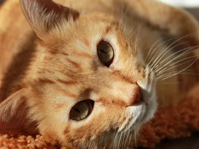
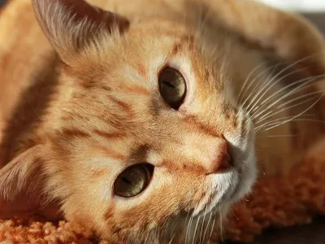

Mi hijo tiene un mejor amigo, que siempre lo acompaña, lo mima y lo cuida mucho, siempre que puede lo persigue y juega con el, a veces pareciera que el juego es el de las escondidas. Con el está aprendiendo a cuidar la amistad, el amor que un ser le puede brindar y el que él es capaz de brindarle a ese ser.
Siempre peleamos por que a veces exagera en ese amor, y el pobre pelirojo quiere huir de tanto cariño, cuando lo abraza, lo aprieta y lo besa con mucha ternura, y ya sabemos como son los niños, no quieren tanto mimo a veces.
Siempre está viendo que tenga todos los cuidados necesarios
Mi primer sitio WEB dedicado al amor de mi vida... Dani